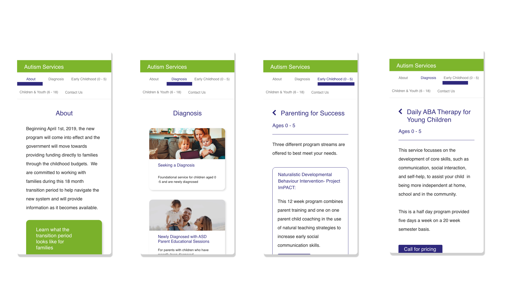

With the changes made from the Ontario Government regarding how families accessed Autism services, organizations were forced to quickly change how their services were offered. During this confusing time, myself and the web development team created a tool to help clients navigate the new fee for service system.
Before these changes, there was little information in terms of how users would be guided through the existing system and did not showcase Surrey Place's services offered. The goal was to: help users of all demographics understand what changes were happening, highlight the new offerings of the organization, and complete it within one week.
We were given a document that mentioned areas the company wanted to focus on and started creating the information architecture of how the finished product would look. From there, I drew quick wireframes to begin laying out how the website would look based on the IA and translated these into high fidelity mockups in Adobe XD.
The target audience for this project was both families who were currently waitlisted to receive services and families who were already accessing services but in need of guidance within the changing environment. Personas were created and validated based off of user research and interviews that happened before, during and after this project was launched.
 OutcomeThe new UI was launched within the week to allow families to get a headstart on changes within the new system. It allowed the client to showcase their offerings ahead of their competitors and allowed for growth within the UI without changing the integrity of the design as new programs were added.
After the project launched, I attended focus groups and discussed with clients their expectations, pain points and goals when interacting with the website. This feedback (and ongoing feedback) helped refine the user experience as more services became available.